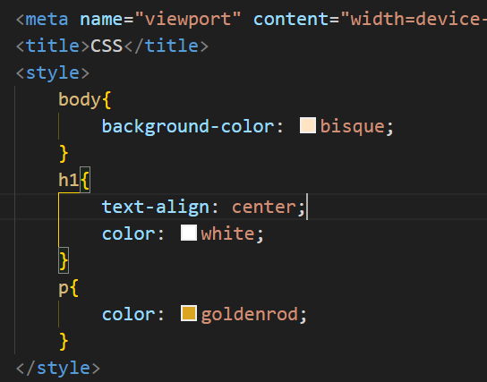
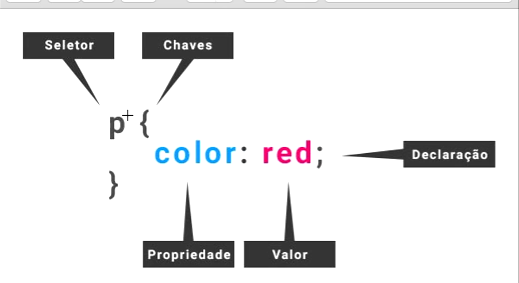

Estilos Internos ou Locais
Para definir os estilos internos, basta adicionar os atributos dentro das tag style com sua estilização dentro do cabeçalho(head) do arquivo html

Seletores
Em CSS, seletores são padrões usados para selecionar elementos HTML específicos em um documento, a fim de aplicar a eles estilos definidos em uma folha de estilo. Eles permitem que você direcione elementos com base em seus atributos, hierarquia e outros critérios.
Tipo de seletores
- Seletores de elementos: selecionam elementos html com base em suas tags: ex.: p, h1, div
- Seletores de Classe: seleciona classes com base no atributo class".".
- Seletores de ID: selecionam elementos com base no atributo id "#"
- Seletores de Atributo: selecionam elementos com base na presença ou valor de um atributo (ex.:[type="text"], [href^="#"])
- Seletores de Pseudo-classes: selecionam elementos com base em um estado específicos(ex.: :hover, :focus , :nth-child)
- Seletores de Pseudo-elemento: Criam novos elementos virtuais(ex.: ::before, ::after)
- Seletores Combinadores: Combinam seletores para selecionar elementos com base em suas relações dentro do documneto(ex.: descendente, filhos, irmãos
